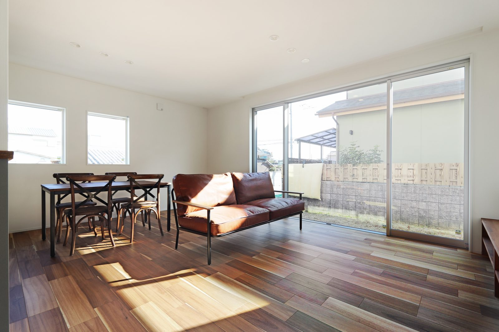
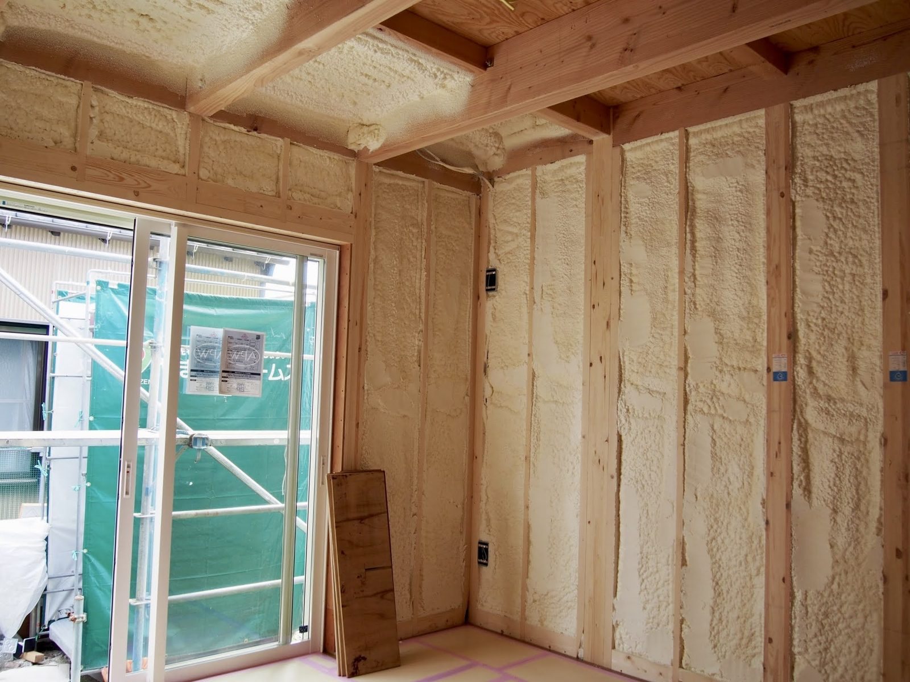

2026年9月1日、フラット35の金利が発表されました。
最低金利は3.460％。
いまの制度になった2017年10月以降で、最も高い水準です。

同じ家でも、借りる月が違えば金額が変わります。
先月は3.290％でした。
ひと月で0.17％上がっています。
数字だけ見ると小さく感じます。
月々にすると、いくら変わるのでしょうか。
そしてもうひとつ。
3.460％は「基準の数字」です。
高性能な住宅には割引があります。あとで説明します。
| 借入額 | 8月 3.290％ | 9月 3.460％ | 35年の差 |
|---|---|---|---|
| 2,500万円 | 100,304円 | 102,744円 | +102万円 |
| 3,000万円 | 120,365円 | 123,293円 | +123万円 |
| 3,500万円 | 140,426円 | 143,842円 | +143万円 |
| 4,000万円 | 160,486円 | 164,391円 | +164万円 |
3,000万円を借りる方で、月2,928円。
35年では123万円です。
ひと月の違いで、123万円の差がつきました。
3.460％は基準の数字。
高性能な住宅は割引されます
ここからが本題です。
フラット35にはフラット35Sという仕組みがあります。
性能の高い家を建てると、金利が引き下げられる制度です。
点数（ポイント）で決まります。
ZEH水準の住宅なら3ポイント。
子育て世帯なら、子どもの人数に応じて2ポイント以上。
長期優良住宅なら、維持保全型で1ポイント。
では、月々はどう変わるのでしょうか。
3,000万円を35年で借りた場合です。
| 家の性能 | 当初金利 | 月々 （当初5年） | 5年の差 |
|---|---|---|---|
| 引き下げなし | 3.460％ | 123,293円 | — |
| ZEH水準 | 2.710％ | 110,655円 | −76万円 |
| 子育て＋ZEH＋長期優良 | 2.460％ | 106,606円 | −100万円 |

仕上げると見えなくなる部分が、返済額に効いてきます。
ZEH水準にするだけで、月12,638円。
5年で76万円です。
先ほど「ひと月の違いで123万円」と書きました。
性能の差も、同じくらい効いてきます。
建てるときの費用だけでなく、
借りるときの条件まで変わります。
シバサンホームは、断熱等級6・UA値0.4・C値0.2を標準にしています。
長期優良住宅とZEHにも対応しています。
数字の意味は性能のページにまとめました。
ポイントの数え方や引き下げの幅は年度で変わります。
この記事は2026年度の内容です。
申し込みの前に、住宅金融支援機構のホームページで最新をご確認ください。
変動金利のほうが得なのでしょうか
いま、固定と変動の差は2.23％あります。
過去最大の開きです。
3,000万円を借りる場合で比べると、
変動0.9％なら月々83,295円。
固定3.46％なら月々123,293円。
その差は月4万円です。
これだけ見れば変動が有利に見えます。
ただ、変動金利は日本銀行の政策金利に連れて動きます。
つまり、いまの差がそのまま続くとは限りません。
どちらが得かは、これから先の金利しだいです。
正直なところ、誰にも分かりません。
どちらを選ぶべきかは申し上げられません。
ただ、どちらを選んでも困らない借り方はお話しできます。
では、家づくりを急ぐべきでしょうか
おすすめしません。
金利が上がると聞くと、焦ります。
「早く決めないと損をする」と感じます。
ただ、急いで決めた家は、住んでから後悔することが多いのです。
間取りも、土地も、住宅会社も、あとから変えられません。
35年住む家を、ひと月の金利で決めないでください。
金利は選べませんが、借入額は選べます
ここが大事なところです。
金利は自分で動かせません。
でも、いくら借りるかは自分で決められます。
先ほどの表をもう一度見てください。
金利が0.17％上がったときの差より、
借入額を500万円下げたときの差のほうが、はるかに大きいのです。
借入額を決めるには、総額が分かっていないといけません。
建物だけでなく、土地・諸費用・外構・地盤改良まで。
ここが見えていないと、あとから借入額が膨らみます。
「この家づくり全体でいくらかかるのか」を出してください。
効くのは、そちらです。
いま、やっておくといいこと
- 土地・建物・諸費用・外構まで含めた総額を出す
- 月々いくらなら無理なく返せるかを、先に決める
- 複数の銀行の事前審査を受けて、条件を比べる
- 固定と変動、両方で月々を計算して見比べる
- 金利の話は毎月変わるので、契約の直前にもう一度確認する
総額の出し方はこちらの記事に、
奈良の坪単価の目安はこちらの記事にまとめています。
金利が動く時代の家づくり
少し前まで、住宅ローンの金利はほとんど動きませんでした。
「どこで借りても似たようなもの」で済んでいた時期が長かったのです。
いまは違います。
フラット35の金利は毎月1日に変わります。
変動金利は日本銀行の会合しだいで動きます。
引き下げの制度も、補助金も、年度ごとに中身が変わります。
これを全部、お客様が追いかけるのは無理だと思います。
仕事をして、子育てをして、
そのうえで毎月の金利を見る。
現実的ではありません。
だから、家を建てる会社を選ぶときに、
聞かれる前に教えてくれるかどうかを見てください。
今月の金利で月々がいくらになるのか。
性能を上げると、いくら割引されるのか。
総額に何が入っていて、何が入っていないのか。
ご夫婦だけで追いかけるのは大変です。
建てたあと35年、返済は続きます。
そのあいだずっと付き合う相手として、
数字を先に出してくれる会社と進めてください。
売り込みのためではなく、
判断の材料としてお使いください。
金利のことも、制度のことも、聞いていただければその場でお出しします。
まとめ
- 2026年9月のフラット35は3.460％。いまの制度で最も高い
- 先月から0.17％上がり、3,000万円の借入で35年123万円の差
- ただし3.460％は基準の数字。高性能な住宅は割引される
- ZEH水準なら当初5年は0.75％安くなる
- 引き下げがあると月12,638円、5年で76万円ちがう
- 変動との差は2.23％と過去最大。ただし変動も上がる見込みがある
- 金利で家づくりを急がない。急いで決めた家は後悔しやすい
- 選べるのは、借入額と、家の性能。効くのはそちら
この記事の金利は2026年9月1日に発表されたものです。
フラット35の金利は毎月1日に見直されます。
最新の数字は、
住宅金融支援機構のホームページでご確認ください。

奈良の工務店シバサンホームで、初めての家づくりに伴走しています。お金のことこそ正直に。モットーはスピード・誠実さ・楽しさ。